Publications
Selected Publications
-

ARNOLD: A Benchmark for Language-Grounded Task Learning with Continuous States in Realistic Scenes
Ran Gong*, Jiangyong Huang*, Yizhou Zhao, Haoran Geng, Xiaofeng Gao, Qingyang Wu, Wensi Ai, Ziheng Zhou, Demetri Terzopoulos, Song-Chun Zhu, Baoxiong Jia, Siyuan Huang
Paper Website
International Conference on Computer Vision (ICCV), 2023
Spotlight for LangRob @ CoRL 2022 Workshop -
VRKitchen: an Interactive 3D Environment for Learning Real Life Cooking Tasks
Xiaofeng Gao, Ran Gong, Tianmin Shu, Xu Xie, Shu Wang, Song-Chun Zhu
PDF Website
ICML workshop on Reinforcement Learning for Real Life, 2019
-
(* indicates equal contribution)
-
Robotics & Embodied AI
-
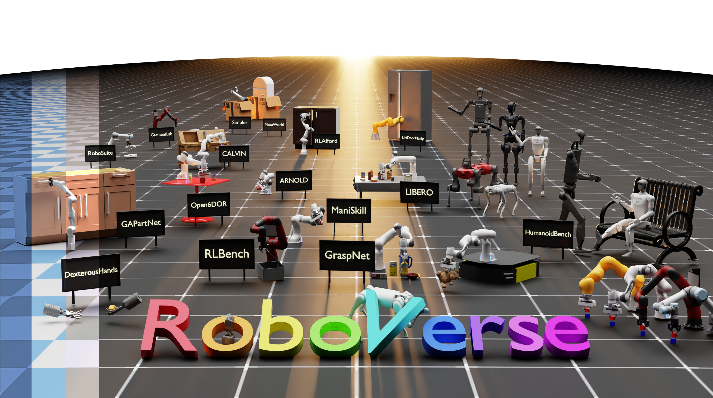
RoboVerse: Towards a Unified Platform, Dataset and Benchmark for Scalable and Generalizable Robot Learning
Haoran Geng*, Feishi Wang*, Songlin Wei*, Yuyang Li*, Bangjun Wang*, Boshi An*, Charlie Tianyue Cheng*, Haozhe Lou, Peihao Li, Yen-Jen Wang, Yutong Liang, Dylan Goetting, Chaoyi Xu, Haozhe Chen, Yuxi Qian, Yiran Geng, Jiageng Mao, Weikang Wan, Mingtong Zhang, Jiangran Lyu, Siheng Zhao, Jiazhao Zhang, Jialiang Zhang, Chengyang Zhao, Haoran Lu, Yufei Ding, Ran Gong, Yuran Wang, Yuxuan Kuang, Ruihai Wu, Baoxiong Jia, Carlo Sferrazza, Hao Dong, Siyuan Huang, Koushil Sreenath, Yue Wang, Jitendra Malik, Pieter Abbeel
PDF Website
Robotics: Science and Systems, 2025Data scaling and standardized evaluation benchmarks have driven significant advances in natural language processing and computer vision. However, robotics faces unique challenges in scaling data and establishing reliable evaluation protocols. Collecting real-world robotic data is resource-intensive and inefficient, while benchmarking in real-world scenarios remains highly complex. Synthetic data and simulation offer promising alternatives, yet existing efforts often fall short in data quality, diversity, and benchmark standardization. To address these challenges, we introduce ROBOVERSE, a comprehensive framework comprising a simulation platform, a synthetic dataset, and unified benchmarks. Our simulation platform supports multiple simulators and robotic embodiments, enabling seamless transitions between different environments. The synthetic dataset, featuring high-fidelity physics and photorealistic rendering, is constructed through multiple approaches including migration from public datasets, policy rollout, and motion planning, etc. enhanced by data augmentation. Additionally, we propose unified benchmarks for imitation learning and reinforcement learning, enabling consistent evaluation across different levels of generalization. At the core of the simulation platform is METASIM, an infrastructure that abstracts diverse simulation environments into a universal interface. It restructures existing simulation environments into a simulator-agnostic configuration system, as well as an API aligning different simulator functionalities, such as launching simulation environments, loading assets with initial states, stepping the physics engine, etc. This abstraction ensures interoperability and extensibility. Comprehensive experiments demonstrate that ROBOVERSE enhances the performance of imitation learning, reinforcement learning, and world model learning, improving sim-to-real transfer. These results validate the reliability of our dataset and benchmarks, establishing RoboVerse as a robust solution for advancing simulation-assisted robot learning.@misc{geng2025roboverse, title={RoboVerse: Towards a Unified Platform, Dataset and Benchmark for Scalable and Generalizable Robot Learning}, author={Haoran Geng and Feishi Wang and Songlin Wei and Yuyang Li and Bangjun Wang and Boshi An and Charlie Tianyue Cheng and Haozhe Lou and Peihao Li and Yen-Jen Wang and Yutong Liang and Dylan Goetting and Chaoyi Xu and Haozhe Chen and Yuxi Qian and Yiran Geng and Jiageng Mao and Weikang Wan and Mingtong Zhang and Jiangran Lyu and Siheng Zhao and Jiazhao Zhang and Jialiang Zhang and Chengyang Zhao and Haoran Lu and Yufei Ding and Ran Gong and Yuran Wang and Yuxuan Kuang and Ruihai Wu and Baoxiong Jia and Carlo Sferrazza and Hao Dong and Siyuan Huang and Koushil Sreenath and Yue Wang and Jitendra Malik and Pieter Abbeel}, year={2025}, primaryClass={cs.RO}, url={https://roboverse.wiki}, } -
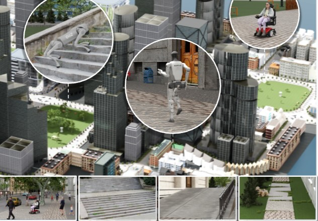
Towards Autonomous Micromobility through Scalable Urban Simulation
Wayne Wu*, Honglin He*, Chaoyuan Zhang, Jack He, Seth Z. Zhao, Ran Gong, Quanyi Li, and Bolei Zhou
Website
IEEE/CVF Computer Vision and Pattern Recognition Conference (CVPR) Highlight, 2025Micromobility, which utilizes lightweight mobile machines moving in urban public spaces - such as delivery robots and electric wheelchairs - emerges as a promising alternative to vehicular mobility. Current micromobility depends mostly on human manual operation (in-person or remote control), which raises safety and efficiency concerns when navigating busy urban environments full of unpredictable obstacles and pedestrians. Assisting humans with AI agents in maneuvering micromobility devices presents a viable solution for enhancing safety and efficiency. In this work, we present a scalable urban simulation solution to advance autonomous micromobility. First, we build URBAN-SIM - a high-performance robot learning platform for large-scale training of embodied agents in interactive urban scenes. URBAN-SIM contains three critical modules: Hierarchical Urban Generation pipeline, Interactive Dynamics Generation strategy, and Asynchronous Scene Sampling scheme, to improve the diversity, realism, and efficiency of robot learning in simulation. Then, we propose URBAN-BENCH - a suite of essential tasks and benchmarks to gauge various capabilities of the AI agents in achieving autonomous micromobility. URBAN-BENCH includes eight tasks based on three core skills of the agents: Urban Locomotion, Urban Navigation, and Urban Traverse. We evaluate four robots with heterogeneous embodiments, such as the wheeled and legged robots, across these tasks. Experiments on diverse terrains and urban structures reveal each robot's strengths and limitations.@inproceedings{wu2025urbansim, title={Towards Autonomous Micromobility through Scalable Urban Simulation}, author={Wu, Wayne and He, Honglin and Zhang, Chaoyuan and He, Jack and Zhao, Seth Z. and Gong, Ran and Li, Quanyi and Zhou, Bolei}, booktitle={Proceedings of the IEEE/CVF Conference on Computer Vision and Pattern Recognition}, year={2025} } -
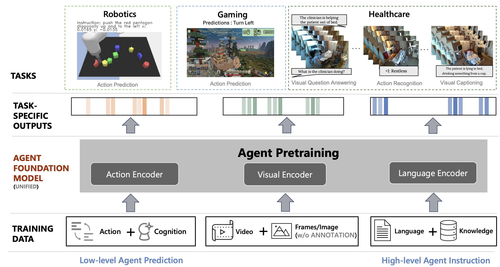
An interactive agent foundation model
Zane Durante*, Ran Gong*, Bidipta Sarkar*, Naoki Wake, Rohan Taori, Paul Tang, Shrinidhi Lakshmikanth, Kevin Schulman, Arnold Milstein, Hoi Vo, Ehsan Adeli, Demetri Terzopoulos, Li Fei-Fei, Jianfeng Gao
PDF
IEEE/CVF Computer Vision and Pattern Recognition Conference (CVPR) Workshops, 2025The development of artificial intelligence systems is transitioning from creating static, task-specific models to dynamic, agent-based systems capable of performing well in a wide range of applications. We propose an Interactive Agent Foundation Model that uses a novel multi-task agent training paradigm for training AI agents across a wide range of domains, datasets, and tasks. Our training paradigm unifies diverse pretraining strategies, including visual masked autoencoders, language modeling, and next-action prediction, enabling a versatile and adaptable AI framework. We demonstrate the performance of our framework across three separate domains— Robotics, Gaming AI, and Healthcare. Our model demonstrates its ability to generate meaningful and contextually relevant outputs in each area. The strength of our approach lies in its generality, leveraging a variety of data sources such as robotics sequences, gameplay data, large-scale video datasets, and textual information for effective multimodal and multi-task learning. Our approach provides a promising avenue for developing generalist, action-taking, multimodal systems.@InProceedings{Durante_2025_CVPR, author = {Durante, Zane and Gong, Ran and Sarkar, Bidipta and Wake, Naoki and Taori, Rohan and Tang, Paul and Lakshmikanth, Shrinidhi and Schulman, Kevin and Milstein, Arnold and Vo, Hoi and Adeli, Ehsan and Terzopoulos, Demetri and Fei-Fei, Li and Gao, Jianfeng}, title = {An Interactive Agent Foundation Model}, booktitle = {Proceedings of the Computer Vision and Pattern Recognition Conference (CVPR) Workshops}, month = {June}, year = {2025}, pages = {3652-3662} } -
ARNOLD: A Benchmark for Language-Grounded Task Learning with Continuous States in Realistic Scenes
Ran Gong*, Jiangyong Huang*, Yizhou Zhao, Haoran Geng, Xiaofeng Gao, Qingyang Wu, Wensi Ai, Ziheng Zhou, Demetri Terzopoulos, Song-Chun Zhu, Baoxiong Jia, Siyuan Huang
Paper Website
International Conference on Computer Vision (ICCV), 2023
Spotlight for LangRob @ CoRL 2022 WorkshopUnderstanding the continuous states of objects is essential for task learning and planning in the real world. However, most existing task learning benchmarks assume discrete(e.g., binary) object goal states, which poses challenges for the learning of complex tasks and transferring learned policy from simulated environments to the real world. Furthermore, state discretization limits a robot's ability to follow human instructions based on the grounding of actions and states. To tackle these challenges, we present ARNOLD, a benchmark that evaluates language-grounded task learning with continuous states in realistic 3D scenes. ARNOLD is comprised of 8 language-conditioned tasks that involve understanding object states and learning policies for continuous goals. To promote language-instructed learning, we provide expert demonstrations with template-generated language descriptions. We assess task performance by utilizing the latest language-conditioned policy learning models. Our results indicate that current models for language-conditioned manipulations continue to experience significant challenges in novel goal-state generalizations, scene generalizations, and object generalizations. These findings highlight the need to develop new algorithms that address this gap and underscore the potential for further research in this area.@article{gong2023arnold, title={ARNOLD: A Benchmark for Language-Grounded Task Learning With Continuous States in Realistic 3D Scenes}, author={Gong, Ran and Huang, Jiangyong and Zhao, Yizhou and Geng, Haoran and Gao, Xiaofeng and Wu, Qingyang and Ai, Wensi and Zhou, Ziheng and Terzopoulos, Demetri and Zhu, Song-Chun and others}, journal={arXiv preprint arXiv:2304.04321}, year={2023} } -
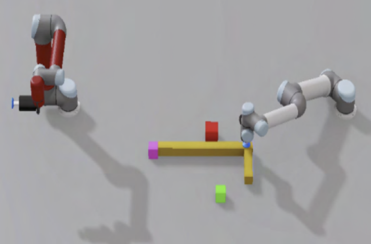
LEMMA: Learning Language-Conditioned Multi-Robot Manipulation
Ran Gong, Xiaofeng Gao, Qiaozi Gao, Suhaila Shakiah, Govind Thattai, Gaurav S. Sukhatme
PDF
IEEE Robotics and Automation Letters (RA-L), 2023Complex manipulation tasks often require robots with complementary capabilities to collaborate. We introduce a benchmark for LanguagE-Conditioned Multi-robot MAnipulation (LEMMA) focused on task allocation and long-horizon object manipulation based on human language instructions in a tabletop setting. LEMMA features 8 types of procedurally generated tasks with varying degree of complexity, some of which require the robots to use tools and pass tools to each other. For each task, we provide 800 expert demonstrations and human instructions for training and evaluations. LEMMA poses greater challenges compared to existing benchmarks, as it requires the system to identify each manipulator's limitations and assign sub-tasks accordingly while also handling strong temporal dependencies in each task. To address these challenges, we propose a modular hierarchical planning approach as a baseline. Our results highlight the potential of LEMMA for developing future language-conditioned multi-robot systems.@article{gong2023lemma, title={LEMMA: Learning Language-Conditioned Multi-Robot Manipulation}, author={Gong, Ran and Gao, Xiaofeng and Gao, Qiaozi and Shakiah, Suhaila and Thattai, Govind and Sukhatme, Gaurav S}, journal={arXiv preprint arXiv:2308.00937}, year={2023} } -
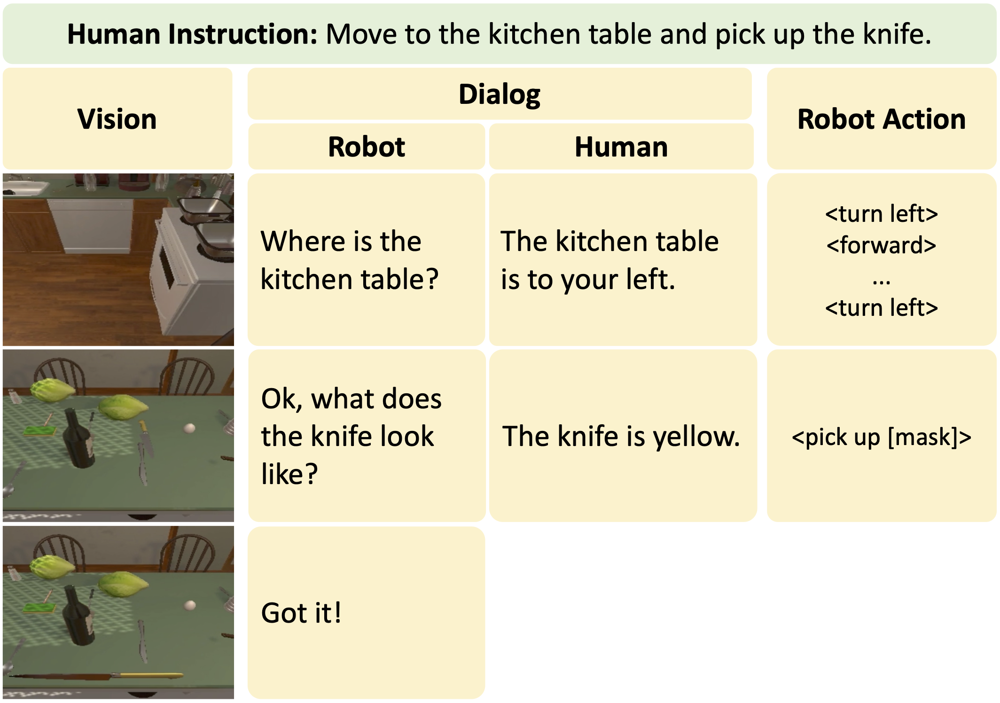
Language-guided Embodied AI benchmarks requiring an agent to navigate an environment and manipulate objects typically allow one-way communication: the human user gives a natural language command to the agent, and the agent can only follow the command passively. We present DialFRED, a dialogue-enabled embodied instruction following benchmark based on the ALFRED benchmark. DialFRED allows an agent to actively ask questions to the human user; the additional information in the user's response is used by the agent to better complete its task. We release a human-annotated dataset with 53K task-relevant questions and answers and an oracle to answer questions. To solve DialFRED, we propose a questioner-performer framework wherein the questioner is pre-trained with the human-annotated data and fine-tuned with reinforcement learning. We make DialFRED publicly available and encourage researchers to propose and evaluate their solutions to building dialog-enabled embodied agents.@article{gao2022dialfred, title={DialFRED: Dialogue-Enabled Agents for Embodied Instruction Following}, author={Gao, Xiaofeng and Gao, Qiaozi and Gong, Ran and Lin, Kaixiang and Thattai, Govind and Sukhatme, Gaurav S.}, journal={IEEE Robotics and Automation Letters}, year={2022}, volume={7}, pages={10049-10056}, doi={10.1109/LRA.2022.3193254} } -
VRKitchen: an Interactive 3D Environment for Learning Real Life Cooking Tasks
Xiaofeng Gao, Ran Gong, Tianmin Shu, Xu Xie, Shu Wang, Song-Chun Zhu
PDF Website
ICML workshop on Reinforcement Learning for Real Life, 2019One of the main challenges of applying reinforcement learning to real world applications is the lack of realistic and standardized environments for training and testing AI agents. In this work, we design and implement a virtual reality (VR) system, VRKitchen, with integrated functions which i) enable embodied agents to perform real life cooking tasks involving a wide range of object manipulations and state changes, and ii) allow human teachers to provide demonstrations for training agents. We also provide standardized evaluation benchmarks and data collection tools to facilitate a broad use in research on learning real life tasks. Video demos, code, and data will be available on the project website: sites.google.com/view/vr-kitchen.@article{gao2019vrkitchen, title={Vrkitchen: an interactive 3d virtual environment for task-oriented learning}, author={Gao, Xiaofeng and Gong, Ran and Shu, Tianmin and Xie, Xu and Wang, Shu and Zhu, Song-Chun}, journal={arXiv preprint arXiv:1903.05757}, year={2019} } -
AI Agents & Gaming
-
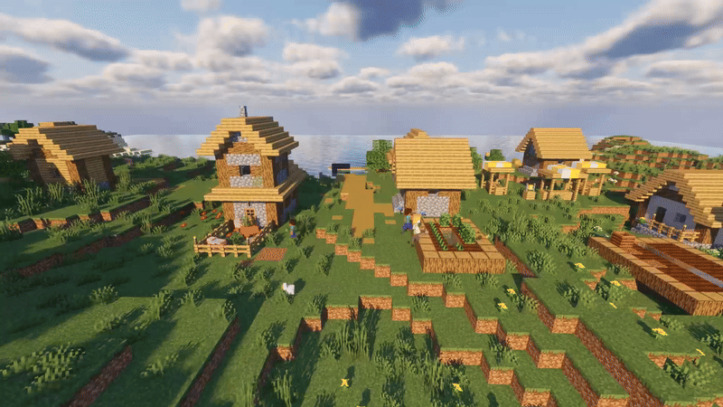
Collaboration is a cornerstone of society. In the real world, human teammates make use of multi-sensory data to tackle challenging tasks in ever-changing environments. It is essential for embodied agents collaborating in visually-rich environments replete with dynamic interactions to understand multi-modal observations and task specifications. To evaluate the performance of generalizable multi-modal collaborative agents, we present TeamCraft, a multi-modal multi-agent benchmark built on top of the open-world video game Minecraft. The benchmark features 55,000 task variants specified by multi-modal prompts, procedurally-generated expert demonstrations for imitation learning, and carefully designed protocols to evaluate model generalization capabilities. We also perform extensive analyses to better understand the limitations and strengths of existing approaches. Our results indicate that existing models continue to face significant challenges in generalizing to novel goals, scenes, and unseen numbers of agents. These findings underscore the need for further research in this area.@article{long2024teamcraft, title={TeamCraft: A Benchmark for Multi-Modal Multi-Agent Systems in Minecraft}, author={Long, Qian and Li, Zhi and Gong, Ran and Wu, Ying Nian and Terzopoulos, Demetri and Gao, Xiaofeng}, journal={arXiv preprint arXiv:2412.05255}, year={2024} } -
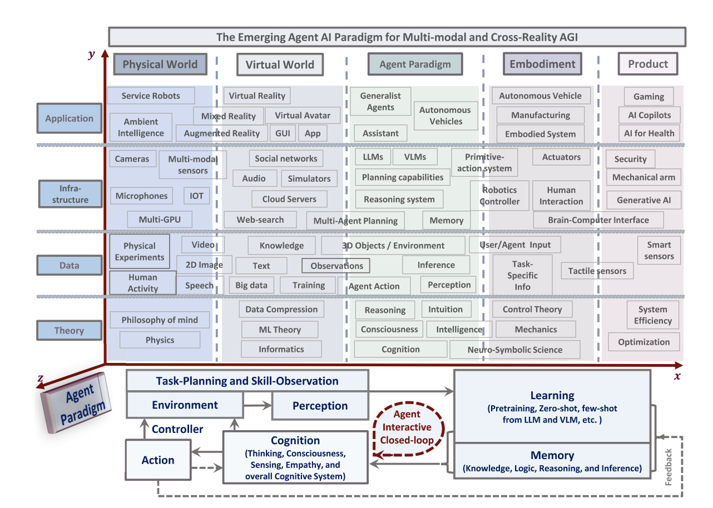
Agent AI: Surveying the Horizons of Multimodal Interaction
Zane Durante, Qiuyuan Huang, Naoki Wake, Ran Gong, Jae Sung Park, Bidipta Sarkar, Rohan Taori, Yusuke Noda, Demetri Terzopoulos, Yejin Choi, Katsushi Ikeuchi, Hoi Vo, Li Fei-Fei, Jianfeng Gao
PDF
arXiv preprint, 2024Multi-modal AI systems will likely become a ubiquitous presence in our everyday lives. A promising approach to making these systems more interactive is to embody them as agents within physical and virtual environments. At present, systems leverage existing foundation models as the basic building blocks for the creation of embodied agents. Embedding agents within such environments facilitates the ability of models to process and interpret visual and contextual data, which is critical for the creation of more sophisticated and context-aware AI systems. For example, a system that can perceive user actions, human behavior, environmental objects, audio expressions, and the collective sentiment of a scene can be used to inform and direct agent responses within the given environment. To accelerate research on agent-based multimodal intelligence, we define "Agent AI" as a class of interactive systems that can perceive visual stimuli, language inputs, and other environmentally-grounded data, and can produce meaningful embodied actions. In particular, we explore systems that aim to improve agents based on next-embodied action prediction by incorporating external knowledge, multi-sensory inputs, and human feedback. We argue that by developing agentic AI systems in grounded environments, one can also mitigate the hallucinations of large foundation models and their tendency to generate environmentally incorrect outputs. The emerging field of Agent AI subsumes the broader embodied and agentic aspects of multimodal interactions. Beyond agents acting and interacting in the physical world, we envision a future where people can easily create any virtual reality or simulated scene and interact with agents embodied within the virtual environment.@article{durante2024agent, title={Agent AI: Surveying the Horizons of Multimodal Interaction}, author={Durante, Zane and Huang, Qiuyuan and Wake, Naoki and Gong, Ran and Park, Jae Sung and Sarkar, Bidipta and Taori, Rohan and Noda, Yusuke and Terzopoulos, Demetri and Choi, Yejin and Ikeuchi, Katsushi and Vo, Hoi and Fei-Fei, Li and Gao, Jianfeng}, journal={arXiv preprint arXiv:2401.03568}, year={2024} } -
 Large Language Models (LLMs) can perform complex scheduling in a multi-agent system and can coordinate agents to complete sophisticated tasks that require extensive collaboration. However, despite the introduction of numerous gaming frameworks, the community lacks adequate benchmarks that support the implemen- tation of a general multi-agent infrastructure encompassing collaboration between LLMs and human-NPCs. We propose a novel infrastructure—MindAgent—for evaluating planning and coordination capabilities in the context of gaming interac- tion. In particular, our infrastructure leverages an existing gaming framework to (i) require understanding of the coordinator for a multi-agent system, (ii) collaborate with human players via instructions, and (iii) enable in-context learning based on few-shot prompting with feedback. Furthermore, we introduce CuisineWorld, a new gaming scenario and its related benchmark that supervises multiple agents playing the game simultaneously and measures multi-agent collaboration efficiency. We have conducted comprehensive evaluations with a new auto-metric collabo- ration score CoS for assessing the collaboration efficiency. Finally, MindAgent can be deployed in real-world gaming scenarios in a customized VR version of CuisineWorld and adapted in the broader "Minecraft" gaming domain as showed in Figure 1. Our work involving LLMs within our new infrastructure for general- purpose scheduling and coordination can elucidate how such skills may be obtained by learning from large language corpora.
Large Language Models (LLMs) can perform complex scheduling in a multi-agent system and can coordinate agents to complete sophisticated tasks that require extensive collaboration. However, despite the introduction of numerous gaming frameworks, the community lacks adequate benchmarks that support the implemen- tation of a general multi-agent infrastructure encompassing collaboration between LLMs and human-NPCs. We propose a novel infrastructure—MindAgent—for evaluating planning and coordination capabilities in the context of gaming interac- tion. In particular, our infrastructure leverages an existing gaming framework to (i) require understanding of the coordinator for a multi-agent system, (ii) collaborate with human players via instructions, and (iii) enable in-context learning based on few-shot prompting with feedback. Furthermore, we introduce CuisineWorld, a new gaming scenario and its related benchmark that supervises multiple agents playing the game simultaneously and measures multi-agent collaboration efficiency. We have conducted comprehensive evaluations with a new auto-metric collabo- ration score CoS for assessing the collaboration efficiency. Finally, MindAgent can be deployed in real-world gaming scenarios in a customized VR version of CuisineWorld and adapted in the broader "Minecraft" gaming domain as showed in Figure 1. Our work involving LLMs within our new infrastructure for general- purpose scheduling and coordination can elucidate how such skills may be obtained by learning from large language corpora.@article{gong2023mindagent, title={MindAgent: Emergent Gaming Interaction}, author={Gong, Ran and Huang, Qiuyuan and Ma, Xiaojian and Vo, Hoi and Durante, Zane and Noda, Yusuke and Zheng, Zilong and Terzopoulos, Demetri and Fei-Fei, Li and others}, journal={arXiv preprint arXiv:2309.09971}, year={2023} } -
Mathematical Reasoning & Problem Solving
-
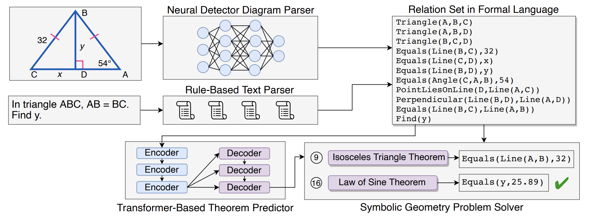
Geometry problem solving has attracted much attention in the NLP community recently. The task is challenging as it requires abstract problem understanding and symbolic reasoning with axiomatic knowledge. However, current datasets are either small in scale or not publicly available. Thus, we construct a new largescale benchmark, Geometry3K, consisting of 3,002 geometry problems with dense annotation in formal language. We further propose a novel geometry solving approach with formal language and symbolic reasoning, called Interpretable Geometry Problem Solver (Inter-GPS). Inter-GPS first parses the problem text and diagram into formal language automatically via rule-based text parsing and neural object detecting, respectively. Unlike implicit learning in existing methods, Inter-GPS incorporates theorem knowledge as conditional rules and performs symbolic reasoning step by step. Also, a theorem predictor is designed to infer the theorem application sequence fed to the symbolic solver for the more efficient and reasonable searching path. Extensive experiments on the Geometry3K and GEOS datasets demonstrate that Inter-GPS achieves significant improvements over existing methods.@inproceedings{lu2021inter, title={Inter-GPS: Interpretable Geometry Problem Solving with Formal Language and Symbolic Reasoning}, author={Lu, Pan and Gong, Ran and Jiang, Shibiao and Qiu, Liang and Huang, Siyuan and Liang, Xiaodan and Zhu, Song-Chun}, booktitle={The 59th Annual Meeting of the Association for Computational Linguistics (ACL)}, year={2021} } -
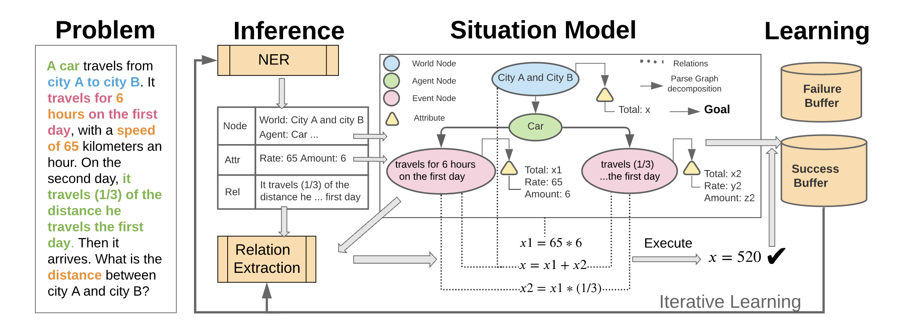
Solving algebra story problems remains a challenging task in artificial intelligence, which requires a detailed understanding of real-world situations and a strong mathematical reasoning capability. Previous neural solvers of math word problems directly translate problem texts into equations, lacking an explicit interpretation of the situations, and often fail to handle more sophisticated situations. To address such limits of neural solvers, we introduce the concept of a situation model, which originates from psychology studies to represent the mental states of humans in problem-solving, and propose SMART, which adopts attributed grammar as the representation of situation models for algebra story problems. Specifically, we first train an information extraction module to extract nodes, attributes, and relations from problem texts and then generate a parse graph based on a pre-defined attributed grammar. An iterative learning strategy is also proposed to improve the performance of SMART further. To rigorously study this task, we carefully curate a new dataset named ASP6.6k. Experimental results on ASP6.6k show that the proposed model outperforms all previous neural solvers by a large margin while preserving much better interpretability. To test these models' generalization capability, we also design an out-of-distribution (OOD) evaluation, in which problems are more complex than those in the training set. Our model exceeds state-of-the-art models by 17% in the OOD evaluation, demonstrating its superior generalization ability.@inproceedings{hong2021smart, title={SMART: A Situation Model for Algebra Story Problems via Attributed Grammar}, author={Hong, Yining and Li, Qing and Gong, Ran and Ciao, Daniel and Huang, Siyuan and Zhu, Song-Chun.}, booktitle={The Thirty-Fifth AAAI Conference on Artificial Intelligence, {AAAI-21}}, year={2021} } -
Human-Robot Interaction
-
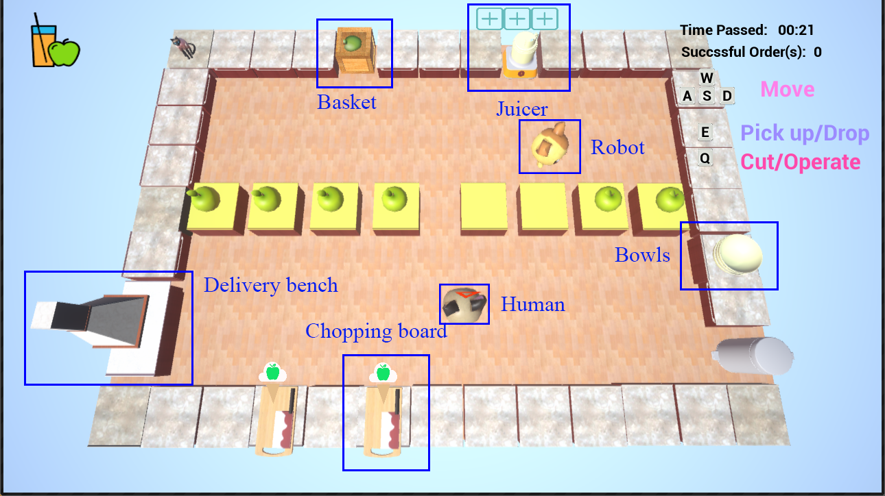
Joint Mind Modeling for Explanation Generation in Complex Human-Robot Collaborative Tasks
Xiaofeng Gao*, Ran Gong*, Yizhou Zhao, Shu Wang, Tianmin Shu, Song-Chun Zhu
PDF Website Talk Slides
IEEE International Conference on Robot & Human Interactive Communication (RO-MAN), 2020Human collaborators can effectively communicate with their partners to finish a common task by inferring each other's mental states (e.g., goals, beliefs, and desires). Such mind-aware communication minimizes the discrepancy among collaborators' mental states, and is crucial to the success in human ad-hoc teaming. We believe that robots collaborating with human users should demonstrate similar pedagogic behavior. Thus, in this paper, we propose a novel explainable AI (XAI) framework for achieving human-like communication in human-robot collaborations, where the robot builds a hierarchical mind model of the human user and generates explanations of its own mind as a form of communications based on its online Bayesian inference of the user's mental state. To evaluate our framework, we conduct a user study on a real-time human-robot cooking task. Experimental results show that the generated explanations of our approach significantly improves the collaboration performance and user perception of the robot.@inproceedings{gao2020joint, title={Joint Mind Modeling for Explanation Generation in Complex Human-Robot Collaborative Tasks}, author={Gao, Xiaofeng and Gong, Ran and Zhao, Yizhou and Wang, Shu and Shu, Tianmin and Zhu, Song-Chun}, booktitle={2020 29th IEEE International Conference on Robot and Human Interactive Communication (RO-MAN)}, pages={1119--1126}, year={2020}, organization={IEEE} } -
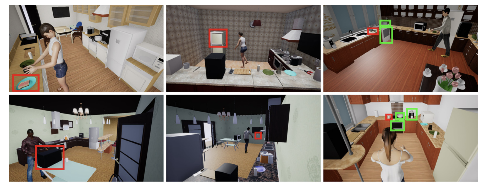
Learning to Infer Human Attention in Daily Activities
Zhixiong Nan, Tianmin Shu, Ran Gong, Shu Wang, Ping Wei, Song-Chun Zhu, Nanning Zheng
PDF
Pattern Recognition 2020The first attention model in the computer science community is proposed in 1998. In the following years, human attention has been intensively studied. However, these studies mainly refer human attention as the image regions that draw the attention of a human (outside the image) who is looking at the image. In this paper, we infer the attention of a human inside a third-person view video where the human is doing a task, and define human attention as attentional objects that coincide with the task the human is doing. To infer human attention, we propose a deep neural network model that fuses both low-level human pose cue and high-level task encoding cue. Due to the lack of appropriate public datasets for studying this problem, we newly collect a video dataset in complex Virtual-Reality (VR) scenes. In the experiments, we widely compare our method with three other methods on this VR dataset. In addition, we re-annotate a public real dataset and conduct the extensional experiments on this real dataset. The experiment results validate the effectiveness of our method.@article{nan2020learning, title={Learning to infer human attention in daily activities}, author={Nan, Zhixiong and Shu, Tianmin and Gong, Ran and Wang, Shu and Wei, Ping and Zhu, Song-Chun and Zheng, Nanning}, journal={Pattern Recognition}, volume={103}, pages={107314}, year={2020}, publisher={Elsevier} }